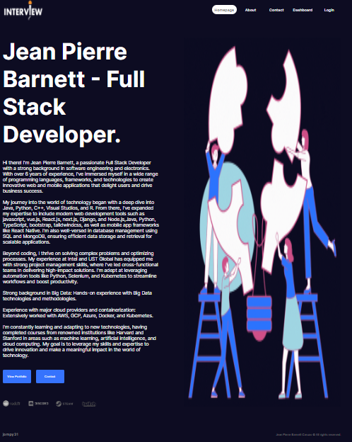
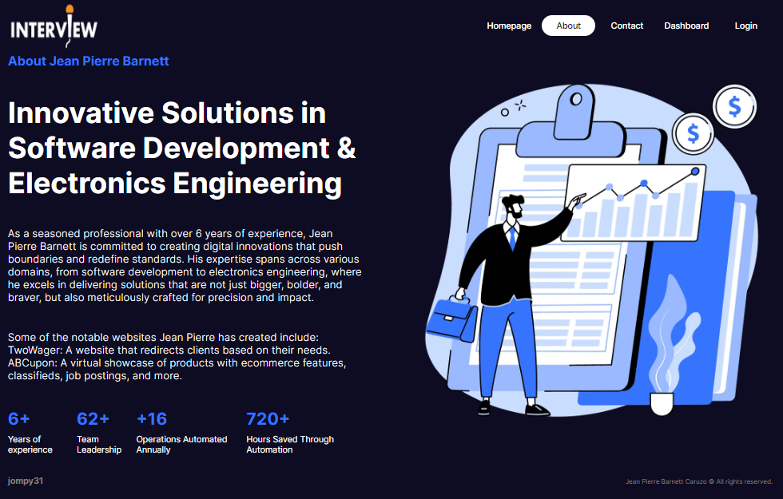
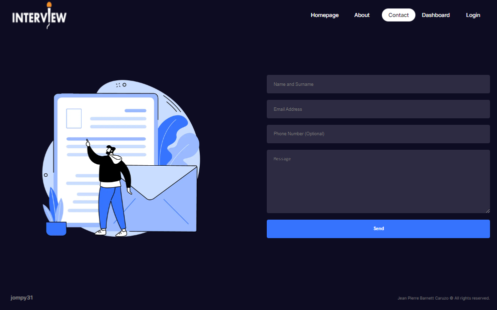
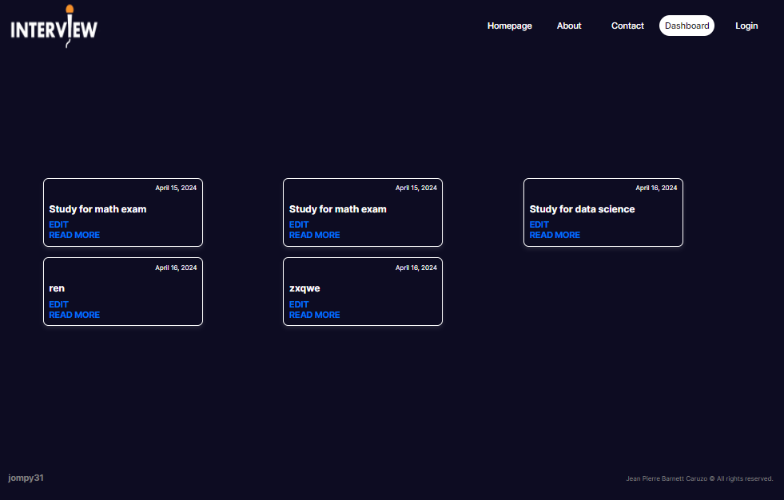
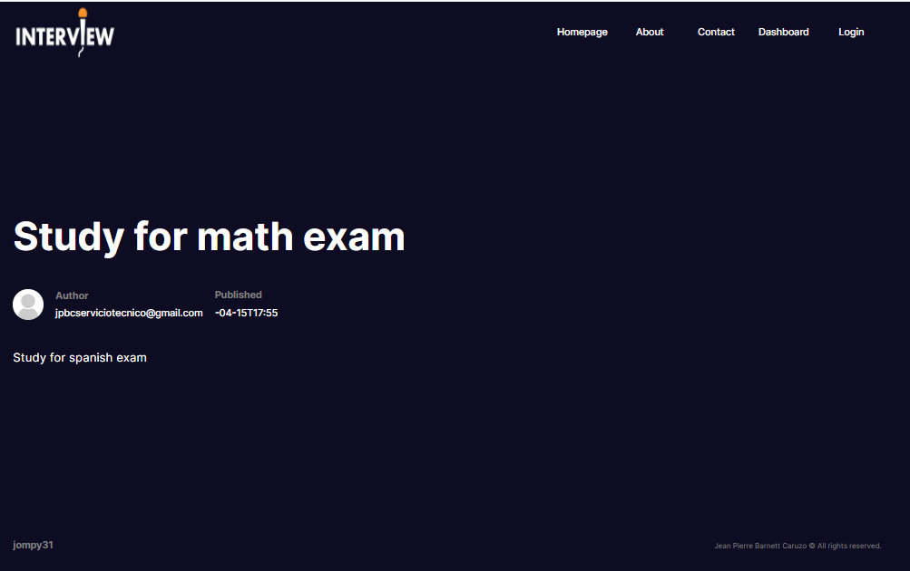
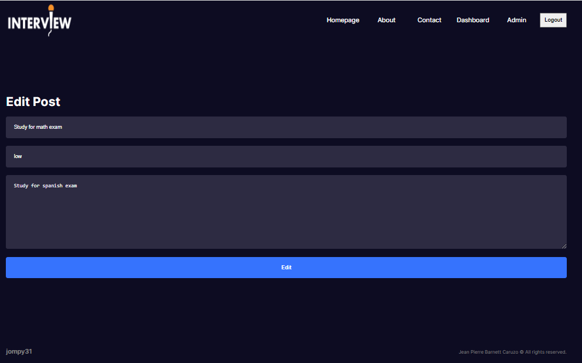
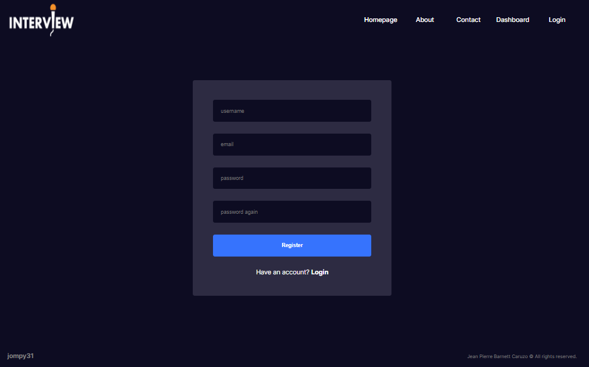
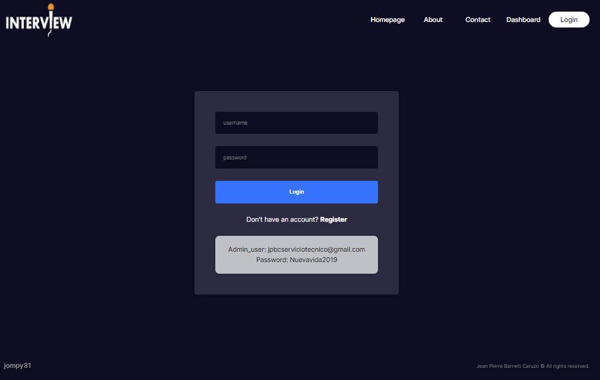
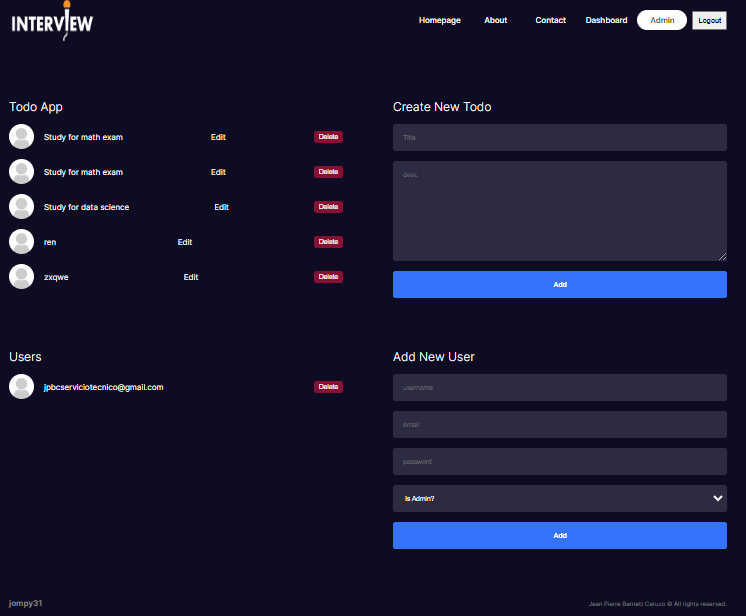

1. Introduction
Welcome to the Viewstats Full Stack Project, developed by Jean Pierre Barnett. This project
represents a comprehensive web application that allows users to register and log in to manage their
to-do lists.
A-) Features
The application offers the following features:
- User registration and login.
- Creation, management, and deletion of to-do list items.
- Access to to-do lists from anywhere using the user account.
B-) Technologies Used
The project is developed using the following technologies:
- Frontend: Next.js and React.
- Backend: Node.js, Express, and MongoDB.
C-) UI/UX Design
Special attention has been given to user interface design to provide an intuitive and efficient
experience to users. Features include:
- Loading and error states.
- Custom and thoughtful user interface.
- Mobile-friendly and accessibility.
- Animations and tooltips.
2. Expected Outcomes
The project is expected to meet the following criteria:
- Flawless setup of the Next.js application with advanced configurations.
- Fully responsive design with exceptional UI/UX.
- Excellent use of state management using React state/Context API.
- Seamless integration of API with error handling.
- Well-designed backend models and architecture.
- Comprehensive and clear documentation.
- Quality and efficiency of the code.
The project should be submitted via the Vercel platform, providing the deployment URL on Vercel as
well as access to the backend repository.
4. Web Application Deployment
Overview of sections of the application:
When you run the deployed application, you will find the following sections:
1. Homepage /
The homepage of ViewStats showcases Jean Pierre Barnett's profile as a Full Stack Developer,
emphasizing his skills and experience. It includes a brief summary of his expertise and an
invitation to view his portfolio and contact him.

The page.js document shows a React component called Home, which represents the home page of a website. In this component, elements like Link and Image are imported from the next/link and next/image library respectively. The Home component includes a main container with two sections: one for the textual content and another for the image. The textual content describes Jean Pierre Barnett's experience and skills as a Full Stack developer, highlighting his experience in a variety of technologies and tools. Additionally, links are provided to view his portfolio and to contact him. The component uses CSS styles defined in the home.module.css file to format and style elements on the page.
2. About
The src\app\about\page.jsx file displays the code for an About page of a website. Imports the necessary Next.js modules, including Image, and page-specific styles from a about.module.css file. The AboutPage function defines the content of the About page, which includes a subtitle, a title, a detailed description about Jean Pierre Barnett and his professional achievements, as well as a list of websites notably created by him. Additionally, it displays key statistics about his experience and achievements, represented in the form of boxes. The page is designed to highlight Jean Pierre Barnett's experience and skills in software development and electronic engineering.

3. Contact
The contact.js file displays the code for a Contact page on a website. Import the necessary React modules, such as useRef, and the necessary Next.js image. It also imports page-specific styles from a contact.module.css file. The ContactPage feature defines the content of the contact page, which includes a contact form where users can enter their name, email, phone number (optional), and a message. When the user submits the form, the form data is collected and a WhatsApp message is generated with this information. Finally, a new browser window opens with the WhatsApp link containing the pre-filled message. The page is designed to allow users to contact Jean Pierre Barnett via WhatsApp.

4. Dashboard
The page.jsx file in the src\app\dashboard folder displays the blog page code. This page renders a list of blog posts obtained from a local API.
Let's start with the Dashboard function, which uses the useState hook to maintain a local state of posts and the useEffect hook to make a data request to the server when the component is first mounted. This request is made through the fetchData function, which fetches data from the local API /api/blog and updates the posts status with the response.
The Dashboard function then renders the posts inside a div container with the container class. Iterates over the list of posts using the map method, and for each post, renders a PostCard component, passing the post as a prop.
The PostCard component, located in src\components\postCard\postCard.jsx, receives the post as a prop and displays information such as the post image (if available), the post date, the title, and a short description of the post . Additionally, it provides links to edit the post if you are authenticated or just read more about it.
Finally, in src\app\dashboard\[slug]\page.jsx, we find the code for an individual post page. This page receives a slug as a URL parameter and uses this slug to get the post details from the local API. Renders the post image (if available), title, author information, and post date, as well as the full content of the post.
Both pages make use of functional React components, hooks, and make data requests to a local API to dynamically display blog information.



5. Register
Register Page (page.jsx):
In RegisterPage, the RegisterForm component is utilized to display the registration form. This component resides within a container styled with the styles.container class defined in the register.module.css style file.
Register Form Component (registerForm.jsx):
This component encompasses a form including fields for username, email, password, and password confirmation. Upon form submission, the entered data is dispatched to the register function defined in the action.js file to process user registration.
The register function conducts several checks before registering the user into the database. It ensures password match, verifies unique username, and validates the entered password against the one stored in the database if the user exists. Upon successful registration, the user is redirected to the login page. In case of any error, an appropriate error message is displayed.
Additionally, the form includes a link redirecting users to the login page if they already have an account.
Registration Actions (action.js):
The action.js file contains the register function responsible for registering a new user in the database. This function verifies the validity of the user's input data, such as ensuring a unique username and matching passwords. It then uses bcrypt to hash the password before saving it to the database. If the registration is successful, it returns an object with a success indicator. If there's an error during registration, it returns an object with an appropriate error message.
The file also includes other related actions such as login and logout functions for handling user authentication.

6. login
Login Page (page.jsx):
In the LoginPage component located in src\app\auth\login\page.jsx, the LoginForm component is utilized to display the login form. This component resides within a container styled with the styles.container class defined in the login.module.css style file.
Login Form Component (loginForm.jsx):
The LoginForm component displays a form with fields for username and password. Upon form submission, the entered data is dispatched to the login function defined in the action.js file to authenticate the user.
The login function verifies the user's credentials against the stored data in the database. If the credentials are correct, the user is authenticated, and if not, an appropriate error message is displayed.
If the user doesn't have an account, there is a link provided to the registration page.
Additionally, the LoginForm component includes details for a demo admin user for testing purposes.
Authentication Actions (action.js):
The action.js file contains the login function responsible for authenticating the user. This function checks whether the provided username and password match an existing user in the database. If the authentication is successful, it returns an object with a success indicator. If there's an error during authentication, it returns an object with an appropriate error message.
Authentication Configuration (auth.config.js, auth.js):
Similar to the registration process, authentication configuration and logic are handled in the auth.config.js and auth.js files. These files define the authentication pages, providers, and handle authentication callbacks.
The user's authentication status is maintained by NextAuth.js. Upon successful login, NextAuth.js generates a JWT (JSON Web Token) containing the user's information, which is stored in a session cookie. This allows the user to remain authenticated until they log out or the session expires.

7. Admin
Admin Dashboard Page (page.jsx):
The AdminPage component located in src\app\admin\page.jsx serves as the dashboard for managing posts and users. It consists of two main sections: one for managing posts and another for managing users. Each section displays relevant components and forms for adding, editing, and deleting posts or users.
The session information is obtained using the auth() function, which authenticates the user. The user's ID is then passed as a prop to the AdminPostForm component.
Admin Posts Component (adminPosts.jsx):
The AdminPosts component displays a list of all posts fetched from the database using the getPosts() function. Each post is rendered with its title, an optional image, and options to edit or delete the post.
The edit option redirects to the admin edit form page, passing the post ID as a URL parameter.
Admin Post Form Component (adminPostForm.jsx):
The AdminPostForm component provides a form for creating new posts. It includes fields for entering the title, description, and user ID, with the user ID being pre-filled using the session information obtained from authentication.
Upon form submission, the data is dispatched to the addPost function defined in the action.js file for adding a new post to the database.
Admin Users Component (adminUsers.jsx):
The AdminUsers component displays a list of all users fetched from the database using the getUsers() function. Each user is rendered with their username, an optional avatar image, and an option to delete the user.
Admin User Form Component (adminUserForm.jsx):
The AdminUserForm component provides a form for adding new users. It includes fields for entering the username, email, password, and specifying whether the user is an admin or not.
Upon form submission, the data is dispatched to the addUser function defined in the action.js file for adding a new user to the database.
Admin Edit Form Page (adminEditForm.jsx):
The AdminEditForm component serves as the page for editing existing posts. It retrieves the post ID from the URL parameters and fetches the corresponding post data from the database. The retrieved data is then pre-filled into the form fields, allowing the user to make edits.
Upon form submission, the edited data is dispatched to the editPost function defined in the action.js file for updating the post in the database.

6. User Roles and Functions
When accessing the application via a web browser, different user roles have distinct functions and capabilities. Below is a breakdown of user roles and their respective functions:
6.1. User
The User role represents the target audience for the products and services provided by the application. Upon accessing the application, the User can:
- Register an account
- Login to the application
- Edit tasks
6.2. Admin User
This user role is aimed at:
- Creating tasks
- Editing tasks
- Deleting tasks
- Creating users
- Granting admin privileges to users

If you have any questions, please use Contact Us via WhatsApp for help:
WhatsApp Support